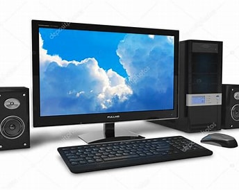
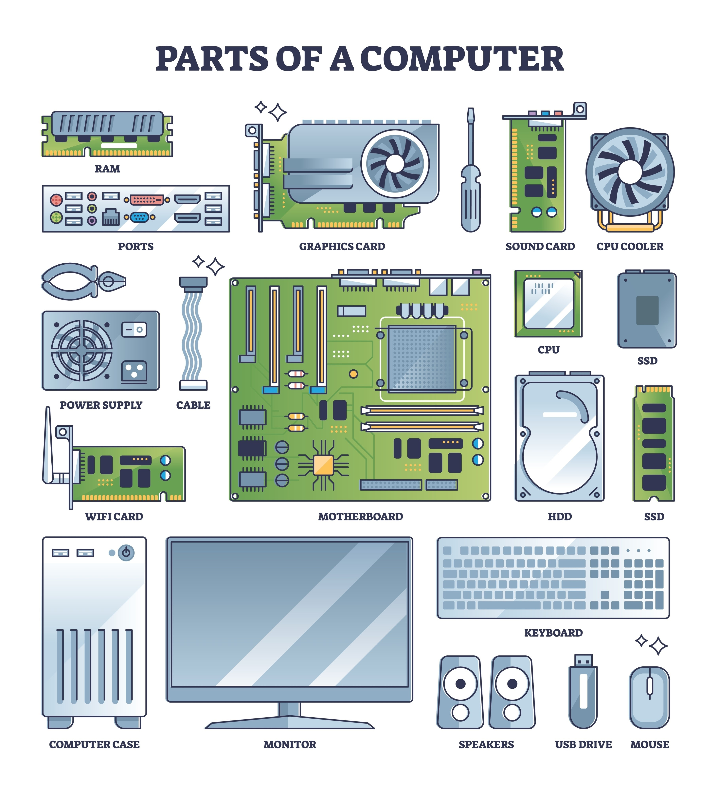

Main Page
supervised by: wali rami wali
today we are here to learn understanding computer and its components

computer is powered by electricity and it was made by a scientst named
[zonrad zuse] which he was from [germany] and the first computer was made in 1910
computer gets divided into 2 parts the hard ware and software
software
is digital instrouctions code apps you cant touch soft ware but the soft where tells the hardware what to do software is chorome windows 10 windows 11
hardware
what is hard ware hard ware is physical parts metal, plastic, silicon you can touch hardware hard wore does the actual work for example hard ware is your screen, keyboard, hard drive, mouse
click the link learn about keyboard
